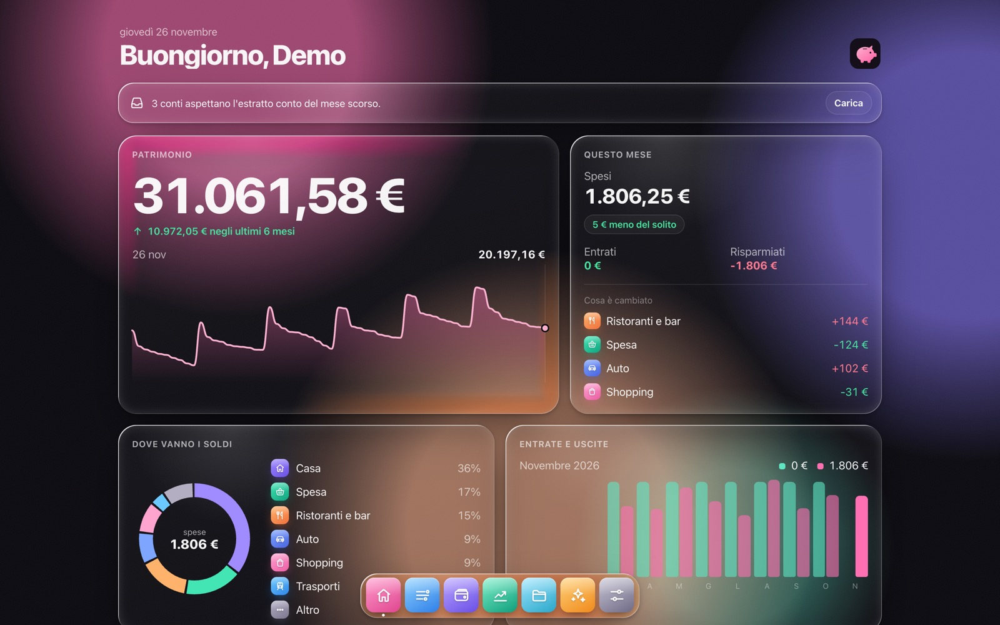
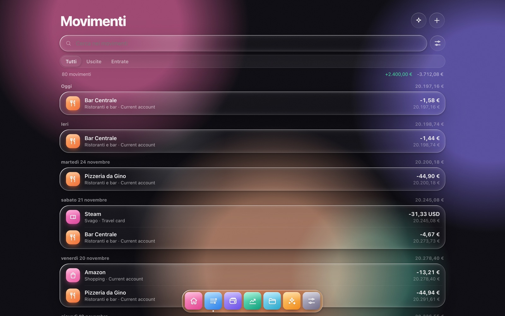
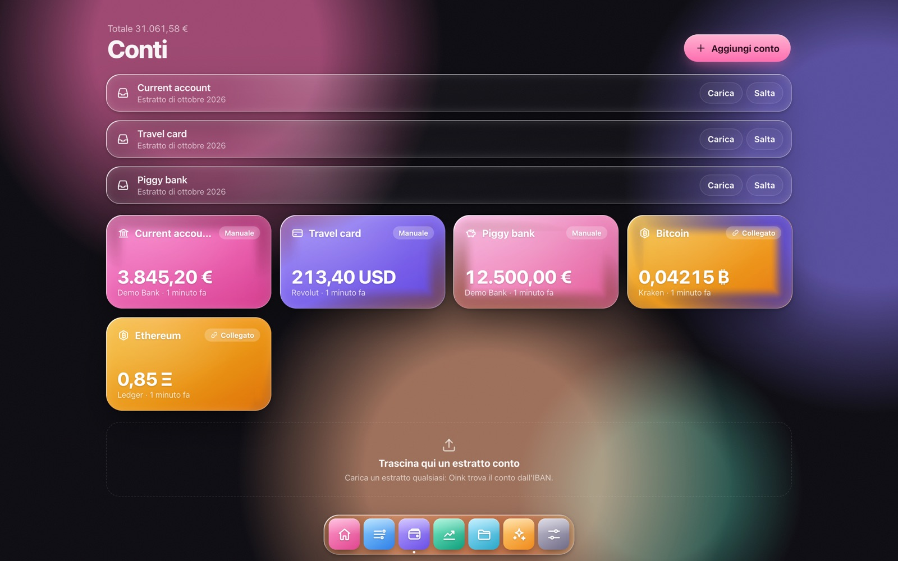
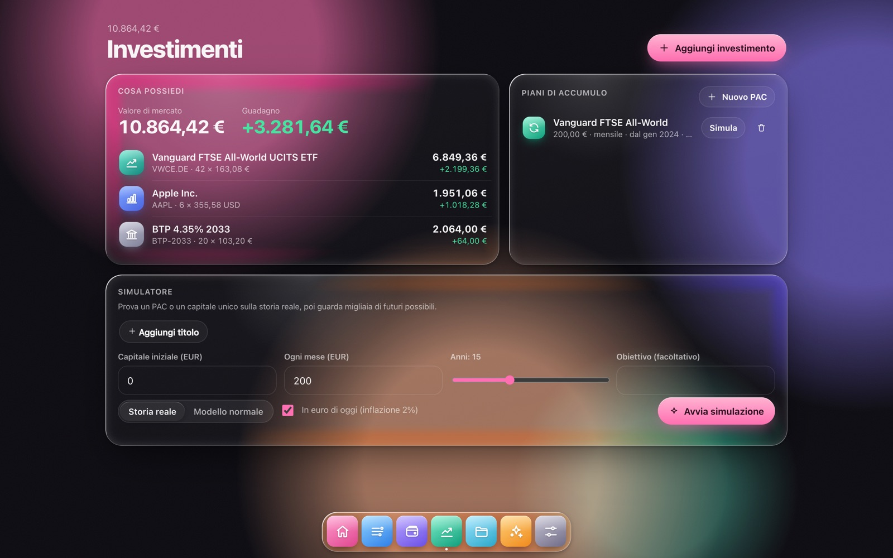
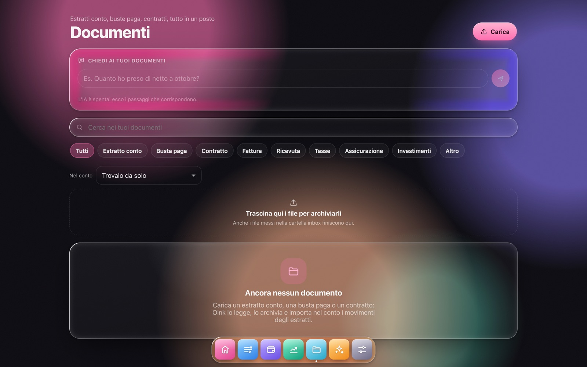
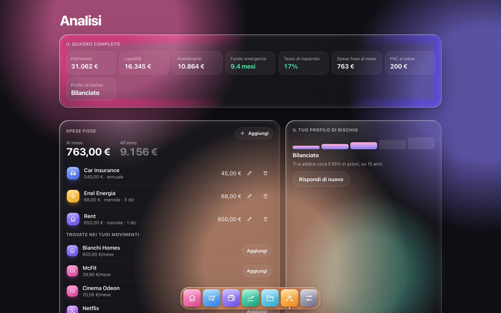
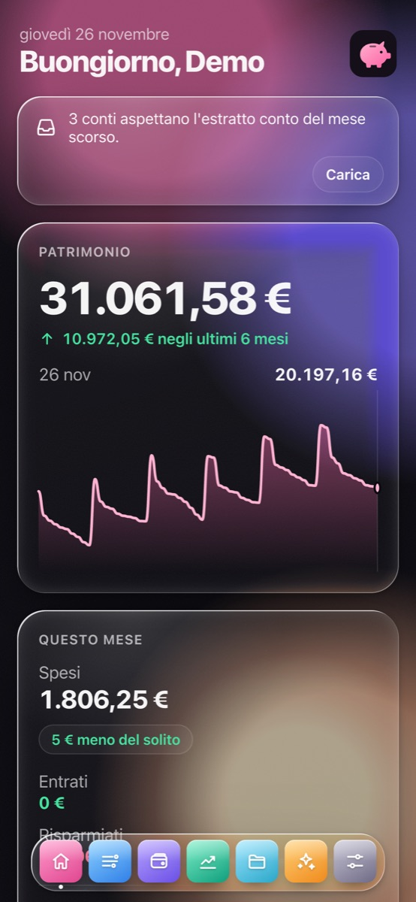

Banks, synced
2,500+ European banks over PSD2 through Enable Banking, free for your own accounts: full history, pending payments, cards. Or add any account by hand.
A personal finance app you host yourself. Your banks, statements, investments and documents in one calm place, with numbers checked by rules and a design that feels like Apple's.
Get it on GitHub Self-host in 5 minutes






Home: what you own, what changed this month, where the money goes.
It runs on your server, in one Docker container. No account with us, no cloud, no ads: the database is a file you own.
2,500+ European banks over PSD2 through Enable Banking, free for your own accounts: full history, pending payments, cards. Or add any account by hand.
Upload a PDF or a bank export: movements are read by rules and must add up (opening + movements = closing). What doesn't goes to «To review», never into your totals.
Money you move between your own accounts is paired and never counted as an expense. Unknown accounts in a statement are proposed already filled in.
Holdings with market prices, savings plans found by themselves in your movements, several securities per plan, switch a security from a date, Monte Carlo simulator.
Monthly, quarterly or yearly. Each one finds its payments; a missing one shows up on Home: wait, mark it paid in cash, skip this time, or cancel it.
Payslips, contracts, invoices: read by Docling, searched with BGE-M3 (dense + exact words), and a chat over them. No local generative AI: models leave memory after 5 idle minutes.
Any provider through LiteLLM, or none at all. It suggests categories, explains a statement that doesn't add up and writes monthly reports. It never changes a number.
Everyone signs up and sees only their own money. The service admin manages people and settings and sees no one's finances. SSO with OpenID Connect if you have it.
A REST API and an MCP server with scoped tokens (reads and writes separate), so the assistant you use can ask «how much did I spend on fuel?» or file a payslip.
Money is never guessed. Every document that carries totals is reconciled before anything enters your accounts.
Any machine with Docker: a mini PC, a NAS, a Proxmox container, a small VPS.
Download it with the example settings and set where people reach Oink.
mkdir oink && cd oink curl -O https://raw.githubusercontent.com/Peppe37/oink/main/docker-compose.yml curl -o .env https://raw.githubusercontent.com/Peppe37/oink/main/.env.example
Add the optional documents engine with its profile when you want it.
docker compose up -d # documents engine (Docling + BGE-M3): docker compose --profile engine up -d
The admin is «admin» with password «oink», to change at the first sign-in. Link your banks from Settings → Bank access, or add an account and drop in a statement.
Yes, and open source under the AGPL-3.0. Bank sync through Enable Banking is free for linking your own accounts. The AI is optional and uses your own key, or a local model.
It stays on your server. Only what you turn on leaves it: bank sync talks to your bank, market prices come from Yahoo Finance, exchange rates from the ECB and CoinGecko, and the AI (if you set one) gets descriptions only when you allow it.
Most European banks over PSD2 (Revolut, Intesa Sanpaolo, Trade Republic's cash account, N26, Fineco…). Brokers show their securities through statements: Oink reads them and proposes your savings plans.
It's a web app that installs on the home screen (iPhone and Android) and is made for phones as much as for desktops. Put it behind your VPN or Cloudflare Access to reach it from anywhere.